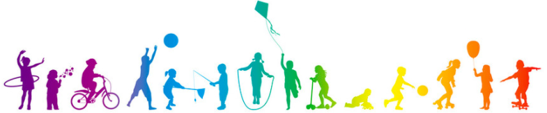
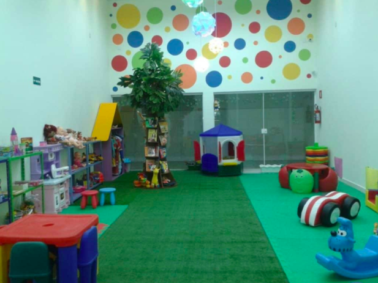
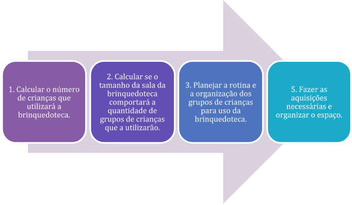
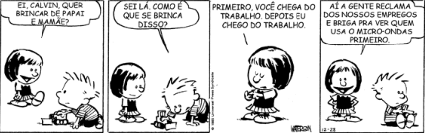
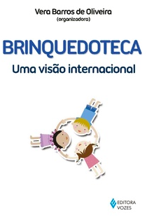

Brinquedoteca e Ludicidade na Educação
Unidade 4 | Aula 1

Disciplina | Brinquedoteca e Ludicidade na Educação

Identificar diferentes olhares sobre jogar e brincar em processos educativos.
Conhecer como se estrutura uma brinquedoteca.
Compreender o papel de brinquedista no processo de aprendizagem.
Jogar; brincar; brinquedoteca; brinquedista; mediador.
Você já parou para pensar que nem todo mundo compartilha a mesma
visão sobre brincar e jogar como ferramentas de aprendizagem, nem mesmo educadores?
Veja, por exemplo, o que Huizinga (2008, p. 33, grifo nosso) compreende sobre jogos:
O jogo é uma atividade ou ocupação voluntária, exercida dentro de certos e determinados limites de tempo e de espaço, segundo regras livremente consentidas, mas absolutamente obrigatórias, dotado de um fim em si mesmo, acompanhado de um sentimento de tensão e de alegria e de uma consciência de ser diferente da "vida quotidiana". Assim definida, a noção parece capaz de abranger tudo aquilo a que chamamos "jogo" entre os animais, as crianças e os adultos: jogos de força e de destreza, jogos de sorte, de adivinhação, exibições de todo o gênero. Pareceu-nos que a categoria de jogo fosse suscetível de ser considerada um dos elementos espirituais básicos da vida.
É importante compreender aqui, que o jogo, na visão do autor, não é livre: existem regras. Por outro lado, ele ressalta que tais regras podem ser negociadas, sendo mais ou menos flexíveis, dependendo dos jogadores.
Assim, os jogos podem ser instrumentos de diversos tipos de aprendizagem, inclusive sobre negociação, flexibilização, limites, respeito.

É preciso ressaltar, porém, que alguns educadores entendem que os jogos têm a única função de fazer as crianças aprenderem a respeitar regras, minimizando as suas demais potencialidades.
Um outro olhar sobre o jogo, que também minimiza suas potencialidades, é que ele serve apenas como forma de exercitar a competição e sagrar vencedores.
O brincar também tem diversas funções pedagógicas, como fazer experiências sociais, aprender a viver em grupo, aprender com a experiência dos colegas, aprender a gerenciar conflitos, entre outras.
Mas, como já dissemos, alguns educadores subestimam essas atividade. Alguns ainda acreditam que o brincar possui apenas a função de extravasar energia ou passar o tempo, minimizando suas potencialidades.
Como se vê, há diferentes visões sobre o emprego pedagógico dos jogos e das brincadeiras, porém é preciso tomar cuidado para não adotar visões simplistas ou, até mesmo, distorcer as potencialidades pedagógicas do jogar e do brincar.
As escolas mais preparadas tendem a criar espaços próprios para o brincar e para o jogar, conhecidos como brinquedoteca.
Fonte: Associação Brasileira de Brinquedotecas (2017)
A brinquedoteca é um espaço apropriado ao brincar e ao emprego da ludicidade voltado à aprendizagem, à construção da identidade, ao desenvolvimento da autonomia e das diferentes possibilidades de linguagem.
O ambiente deve ser acolhedor e possuir diversos estímulos para o desenvolvimento das múltiplas habilidades e capacidades das crianças.
A primeira ideia de brinquedoteca surgiu para impedir que as crianças roubassem brinquedos de uma loja, nos anos de 1934 em Los Angeles (EUA): a loja começou a emprestar brinquedos, no mesmo sistema de empréstimos de livros de uma biblioteca (Teixeira, 2010).
Nos anos de 1960, a ideia se expandiu para a Europa e, em 1963, foi criada a Lekotec (Ludoteca) na Suécia, servindo tanto para empréstimo de brinquedos como para orientar as famílias que possuíam crianças com deficiências. Entendia-se que os brinquedos poderiam ser estímulos poderosos para o desenvolvimento de tais crianças. Nisso compreendiam-se tanto uma visão educacional quanto terapêutica.
Em 1967, surgiram as Toys Libraries (Bibliotecas de Brinquedos) na Inglaterra. O primeiro congresso sobre brinquedotecas ocorreu no Canadá, em 1987, e formalizou a ideia de que as Toys Libraries possuíam funções diversas, tais como orientação educacional, apoio a famílias, socialização e até mesmo valorização cultural. Por isso, sugeriu-se a alteração de seu nome para Centro de Recursos para a Família.
Já no Brasil, a APAE (Associação de Pais e Amigos dos Excepcionais) realizou uma exposição de brinquedos para pais e profissionais que trabalhavam com crianças com deficiência e, a partir daí, em 1973, criou um sistema de empréstimo e rodízio de brinquedos, chamada Ludoteca, que depois se transformou em brinquedotecas circulantes.
Teixeira (2010) afirma que a palavra ‘brinquedoteca’ não existia antes de ser criada pela pedagoga brasileira Nylse Helena da Silva Cunha.
A pedagoga entendia que neste espaço, a criança deveria brincar por brincar, sem ter um objetivo específico, brincando livremente com o brinquedo de sua preferência.
Em 1981, foi criada a Primeira Brinquedoteca Brasileira, na Escola Indianópolis, em São Paulo, e, em 1984, criou-se a Associação Brasileira de Brinquedotecas (ABBri).
A partir de então, e com todas as pesquisas nacionais e internacionais, foram sendo criadas brinquedotecas em escolas de todo o território nacional. Hospitais também começaram a criar brinquedotecas para atendimento a crianças hospitalizadas.
Na Brinquedoteca, o brincar é o centro das atividades e permite e estimula a criança a:
• Se expressar;
• Participar nas brincadeiras e se envolver com outras crianças;
• Operar e transformar situações;
• Desenvolver estratégias, experiências e hipóteses;
• Aprender; e
• Apropriar-se da cultura.
A brinquedoteca é um espaço para brincar e, por isso, independentemente do nível escolar, esse será sempre seu maior objetivo. É importante valorizar a ação da criança que brinca, e para isso, é necessário que haja profissionais conscientes para interagirem e organizarem o espaço de modo que favoreça a essa ação.
(TEIXEIRA, 2010, p. 76).
Entretanto, a estruturação de uma brinquedoteca precisa ser planejada e organizada. É preciso saber quantas crianças vão utilizar a brinquedoteca e qual a idade delas. Veja no infográfico abaixo todas as necessidades prévias para a criação de uma brinquedoteca escolar.

Fonte: a autora.
Em termos de organização da brinquedoteca, há algumas orientações que o(a) brinquedista ou o(a) responsável pela sala precisa dar atenção:
1) O ideal é ter vários brinquedos de multifunções (com várias possibilidades de uso, inclusive que permitam à criança imaginar);
2) Brinquedos coloridos, de várias formas e tamanhos;
3) Os brinquedos podem ser organizados por idade;
4) Os brinquedos podem ser organizados em cantos distintos (exemplo: jogos, bonecos, encaixes etc.);
5) Os brinquedos devem estar em locais que as crianças consigam alcançar, pegar, manipular e guardar.
Na brinquedoteca, deve-se dar condições para que as crianças brinquem livremente e o(a) brinquedista (ou professor) deve valorizar os brinquedos e as atividades criativas e lúdicas.
É preciso entender que a brinquedoteca oferece às crianças brinquedos que talvez ela não tenha acesso regularmente e pode ser uma excelente ideia que a brinquedoteca possa emprestar brinquedos para as crianças, o que é motivador, educativo e possibilitador.
A brinquedoteca deve ser um espaço em que as crianças possam estabelecer interações espontâneas, especiais e não preconceituosas.
Neste local, a criança deve encontrar oportunidade de se relacionar com outros adultos além dos próprios colegas, de forma agradável e sem os formalismos que tanto permeiam a relação entre adultos e crianças.
Embora as atividades lúdicas na brinquedoteca não sejam tão estruturadas como as demais atividades escolares e de casa, também se deve respeitar as crianças e assegurar os direitos infantis.
A brinquedoteca é, sem dúvidas, um local transformador na vida da criança.
Nesta aula, tratamos de um assunto fundamental no campo da educação, que são os diversos olhares sobre jogos e brincadeiras. Percebemos que enquanto alguns mais limitadores, outros são mais potencializadores.
Você, como professor e professora, precisará se posicionar sobre os diversos usos dos jogos, brinquedos e brincadeiras.
Veja o que Teixeira (2010, p. 64) considera sobre a atuação de alguns professores na brinquedoteca:
[...] embora algumas escolas tenham aderido a um espaço para que o brincar possa acontecer, por exemplo, com a criação de brinquedotecas – espaços criados especialmente para promover a brincadeira espontânea ou dirigida, visando ao desenvolvimento e à aprendizagem global da criança –, os professores parecem estar mais preocupados em cumprir os objetivos estipulados pelos programas escolares fixados para cada faixa etária. Com isso, o brincar fica restrito a intervalos entre atividades.
(TESTE, 2010, p. 9).
Esta é uma grande problemática: por um lado, temos os exemplos dos estudos filosóficos, como os de Huizinga (2008), dos estudos pedagógicos, como os de Teixeira (2010) e até de estudos psicológicos, como estudamos nas aulas da Unidade 2, que apontam a importância dos jogos e do brincar para o desenvolvimento global da criança.
No entanto, por outro lado, há uma perspectiva diferente, que é a de alcançar os objetivos ou o desenvolvimento das competências apontadas nos currículos e planejamentos, o que enrijece a ação dos professores.
Nesta última perspectiva, entende-se que existe uma pressão social (pais, escola e sociedade) para que a criança desenvolva e aprenda os conteúdos curriculares, às vezes, a pressão é sutil, outras vezes, não.
A tirinha abaixo demonstra uma situação clara que os professores vivenciam em seu cotidiano. Leia e perceba que a situação relatada não está ligada diretamente a nenhum conteúdo curricular ou competência específica.


Fonte: Nova Escola.
Nesta tirinha, Calvin e Susi decidem brincar de casinha e representam uma situação.
Como conduzir esta brincadeira de forma pedagógica?
Será que os pais vão reclamar?
Será que a coordenadora pedagógica vai entender a importância desta brincadeira?
Como se portar diante desta situação?
Esse é um grande dilema para os professores.
Mas sempre há uma possibilidade de resolução. O ideal é que o(a) professor(a) se associe a escolas que comungam da mesma visão educacional que ele(a).
Também é importante considerar que o currículo possui suas finalidades do ponto de vista da formação acadêmica dos estudantes, ele não pode ser negado ou ignorado, pelo contrário.
O professor e a professora devem utilizar práticas educacionais suficientemente adequadas para cumprir com o currículo e também permitir o livre brincar.

ASSOCIAÇÃO BRASILEIRA DE BRINQUEDOTECAS. Home. 2017. Disponível em: http://www.brinquedoteca.org.br/. Acesso em: 30 dez. 2019.
NOVA ESCOLA. Calvin e seus amigos. 21/01/2019. Disponível em: https://novaescola.org.br/conteudo/3621/calvin-e-seus-amigos. Acesso em: 08 jan. 2020.
TEIXEIRA, S. Você sabe o que é brinquedoteca? - O Mundo Mais Criança. Momento Medicina. Disponível em: https://www.youtube.com/watch?v=YX4VzP50Paw. Acesso em: 08 jan. 2020.
Copyright©2021, Faculdade OPEN. Todos os direitos reservados.
É proibida a reprodução e distribuição total ou parcial deste material, com ou sem fins lucrativos, em qualquer meio, sem prévia autorização.